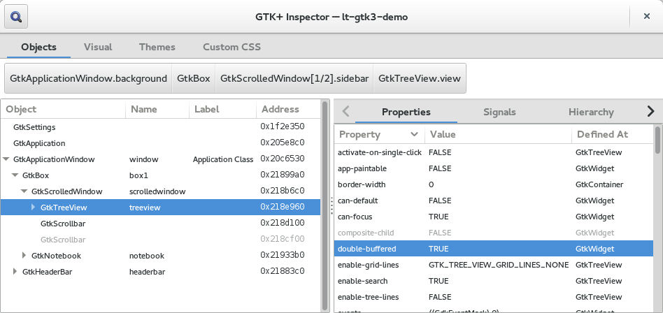

Running GTK Applications
Running GTK Applications
Common commandline options
All GTK applications support a number of standard commandline options. These
are removed from argv by gtk_init(). Modules may parse and remove
further options. The X11 and Windows GDK backends parse some additional
commandline options.
--gtk-module=module- A list of modules to load in addition to those specified in the
GTK3_MODULESenvironment variable and thegtk-modulesGTK setting. --g-fatal-warnings- Make GTK abort on all warnings. This is useful to stop on the first warning in a debugger, if your application is printing multiple warnings. It’s almost always best to start debugging with the first warning that occurs.
--gtk-debug=options- A list of debug options to turn on in addition to those specified in the
GTK_DEBUGenvironment variable. This option is not available if GTK has been built with the--enable-debug=noconfiguration option. --gtk-no-debug=options- A list of debug options to turn off. This option is only available if GTK
has been build with the
--enable-debug=yesconfiguration option.
The following options are really used by GDK, not by GTK, but we list them here for completeness nevertheless.
--class=class- Sets the program class; see
gdk_set_program_class(). --name=name- Sets the program name.
--gdk-debug=options- A list of debug options to turn on in addition to those specified in the
GDK_DEBUGenvironment variable. This option is only available if GTK has been built with the--enable-debug=yesconfiguration option. --gdk-no-debug=options- A list of debug options to turn off. This option is only available if GTK
has been built with the
--enable-debug=yesconfiguration option.
Environment variables
GTK inspects a number of environment variables in addition to standard
variables like LANG, PATH, HOME or DISPLAY; mostly to determine
paths to look for certain files. The X11, Windows and Broadway GDK backends
use some additional environment variables.
GTK_DEBUG- This variable can be set to a list of debug options, which cause GTK to
print out different types of debugging information. Some of these options
are only available when GTK has been built with the
--enable-debug=yesconfiguration option.
actions: Actions and menu modelsbaselines: Show baselinesbuilder: UI definition filesgeometry: Size allocationicontheme: Icon themesinteractive: Open the interactive debuggerkeybindings: Key bindingsmisc: Miscellaneous informationmodules: Loading of GTK modulesno-css-cache: Bypass caching for CSS style propertiesno-pixel-cache: Disable the pixel cacheplugsocket: Cross-process embeddingpixel-cache: Pixel cacheprinting: Printing supportsize-request: Size requeststext: Text widget internalstouchscreen: Pretend the pointer is a touchscreen devicetree: Tree widget internalsupdates: Visual feedback about window updatesresize: Highlight resizing widgetslayout: Show layout borders
The special value all can be used to turn on all debug options. The
special value help can be used to obtain a list of all supported debug options.
GTK3_MODULES- A list of modules to load. Note that GTK also allows to specify modules to
load via a commandline option (
--gtk-module) and with thegtk-modulesGTK setting. GTK_MODULES- A list of modules to load in addition to the ones in the
GTK3_MODULESvariable. Note that this environment variable is read by GTK 2.x too, which may not have the same set of modules available for loading. UseGTK3_MODULESfor modules that are only compatible with GTK 3. GTK_PATH- Specifies a list of directories to search when GTK is looking for dynamically
loaded objects such as the modules specified by
GTK_MODULES, theme engines, input method modules, file system backends and print backends. If the path to the dynamically loaded object is given as an absolute path name, then GTK loads it directly. Otherwise, GTK goes in turn through the directories inGTK_PATH, followed by the directory.gtk-3.0in the user’s home directory, followed by the system default directory, which islibdir/gtk-3.0/modules. (IfGTK_EXE_PREFIXis defined,libdiris$GTK_EXE_PREFIX/lib. Otherwise it is the libdir specified when GTK was configured, usually/usr/lib, or/usr/local/lib.) For each directory in this list, GTK actually looks in a subdirectorydirectory/version/host/typewhereversionis derived from the version of GTK (usepkg-config --variable=gtk_binary_version gtk+-3.0to determine this from a script);hostis the architecture on which GTK was built. (usepkg-config --variable=gtk_host gtk+-3.0to determine this from a script); andtypeis a directory specific to the type of modules; currently it can be:
- modules
- engines
- immodules,
- filesystems
- printbackends
corresponding to the types of modules mentioned above. Either version,
host, or both may be omitted. GTK looks first in the most specific
directory, then in directories with fewer components. The components of
GTK_PATH are separated by the : character on Linux and Unix, and
the ; character on Windows. Note that this environment variable is read
by GTK 2.x too, which makes it unsuitable for setting it system-wide (or
session-wide), since doing so will cause either GTK 2.x applications or
GTK 3 applications to see incompatible modules.
GTK_IM_MODULE- Specifies an IM module to use in preference to the one determined from the
locale. If this isn’t set and you are running on the system that enables
XSETTINGS and has a value in
Gtk/IMModule, that will be used for the default IM module. This also can be a colon-separated list of input-methods, which GTK will try in turn until it finds one available on the system. GTK_IM_MODULE_FILE- Specifies the file listing the IM modules to load. This environment variable
the default value
libdir/gtk-3.0/3.0.0/immodules.cache(libdirhas the same meaning here as explained forGTK_PATH). Theimmodules.cachefile is generated by thegtk-query-immodules-3.0utility. Note that this environment variable is read by GTK 2.x too, which makes it unsuitable for setting it system-wide (or session-wide), since doing so will cause either GTK 2.x applications or GTK 3 applications to see the wrong list of IM modules. GTK_EXE_PREFIX- If set, GTK uses
$GTK_EXE_PREFIX/libinstead of the libdir configured when GTK was compiled. GTK_DATA_PREFIX- If set, makes GTK use
$GTK_DATA_PREFIXinstead of the prefix configured when GTK was compiled. GTK_THEME- If set, makes GTK use the named theme instead of the theme that is specified
by the
gtk-theme-nameGTK setting. This is intended mainly for easy debugging of theme issues. It is also possible to specify a theme variant to load, by appending the variant name with a colon, like this:GTK_THEME=Adwaita:dark.
The following environment variables are used by GdkPixbuf, GDK or Pango, not by GTK itself, but we list them here for completeness nevertheless.
GDK_PIXBUF_MODULE_FILE- Specifies the file listing the GdkPixbuf loader modules to load. This
environment variable overrides the default value
libdir/gtk-3.0/3.0.0/loaders.cache(libdir is the sysconfdir specified when GTK was configured, usually/usr/local/lib.) Theloaders.cachefile is generated by thegdk-pixbuf-query-loadersutility. GDK_DEBUG- If GTK has been configured with
--enable-debug=yes, this variable can be set to a list of debug options, which cause GDK to print out different types of debugging information.
cursor: Information about cursor objects (only win32)dnd: Information about drag-and-dropdraw: Information about drawing operations (only win32)eventloop: Information about event loop operation (mostly Quartz)misc: Miscellaneous informationnogl: Turn off OpenGL. GDK will behave as if OpenGL support was not available.nograbs: Turn off all pointer and keyboard grabsxinerama: Simulate a multi-monitor setupxim: Information about XIM support
The special value all can be used to turn on all debug options.
GDK_RENDERING- If set, selects the way how GDK creates similar surfaces. This affects both
the functionality of the function
gdk_window_create_similar_surface()as well as the way GDK creates backing surfaces for double buffering. The following values can be used:
similar: Create similar surfaces to the window in use. This is the default behavior when the variable is not set.image: Always create image surfaces. This essentially turns off all hardware acceleration inside GTK.recording: Always create recording surfaces. This causes bare rendering to the backend without the creation of intermediate surfaces (Pixmaps in X) and will likely cause flicker.
All other values will be ignored and fall back to the default behavior. More values might be added in the future.
GDK_BACKEND- If set, selects the GDK backend to use. Selecting a backend requires that GTK is compiled with support for that backend. The following backends can be selected, provided they are included in the GDK libraries you are using:
quartz: Selects the native Quartz backendwin32: Selects the native backend for Microsoft Windowsx11: Selects the native backend for connecting to X11 servers.broadway: Selects the Broadway backend for display in web browserswayland: Selects the Wayland backend for connecting to Wayland display servers
Since 3.10, this environment variable can contain a comma-separated list of
backend names, which are tried in order. The list may also contain a *,
which means: try all remaining backends. The special value help can be
used to make GDK print out a list of all available backends. For more
information about selecting backends, see the gdk_display_manager_get() function.
GTK_CSD- The default value of this environment variable is 1. If changed to 0, this disables the default use of client-side decorations on GTK windows, thus making the window manager responsible for drawing the decorations of windows that do not have a custom titlebar widget. CSD is always used for windows with a custom titlebar widget set, as the WM should not draw another titlebar or other decorations around the custom one.
GTK_OVERLAY_SCROLLING- The default value of this environment variable is 1, which means that each
instance of
GtkScrolledWindowwill choose whether to use overlay or full-size scrollbars via its ownGtkScrolledWindow:overlay-scrollingproperty, which defaults toTRUE. If this variable is set to 0, allGtkScrolledWindowinstances are made to use full/non-overlay scrollbars. XDG_DATA_HOME,XDG_DATA_DIRS- GTK uses these environment variables to locate icon themes and MIME information. For more information, see the Icon Theme Specification, the Shared MIME-info Database and the Base Directory Specification.
DESKTOP_STARTUP_ID- GTK uses this environment variable to provide startup notification according
to the Startup Notification Specification.
Following the specification, GTK unsets this variable after reading it (to
keep it from leaking to child processes). So, if you need its value for your
own purposes, you have to read it before calling
gtk_init().
Interactive debugging

GTK includes an interactive debugger, called the GTK Inspector, which lets you explore the widget tree of any GTK application at runtime, as well as tweak the theme and trigger visual debugging aids. You can easily try out changes at runtime before putting them into the code.
Note that the GTK inspector can only show GTK internals. It can not understand the application-specific logic of a GTK application. Also, the fact that the GTK inspector is running in the application process limits what it can do. It is meant as a complement to full-blown debuggers and system tracing facilities such as DTrace, not as a replacement.
To enable the GTK inspector, you can use the
Ctrl+Shift+I or
Ctrl+Shift+D keyboard shortcuts, or set
the GTK_DEBUG=interactive environment variable.
In some situations, it may be inappropriate to give users access to the GTK
inspector. The keyboard shortcuts can be disabled with the
enable-inspector-keybinding key in the org.gtk.Settings.Debug GSettings schema.